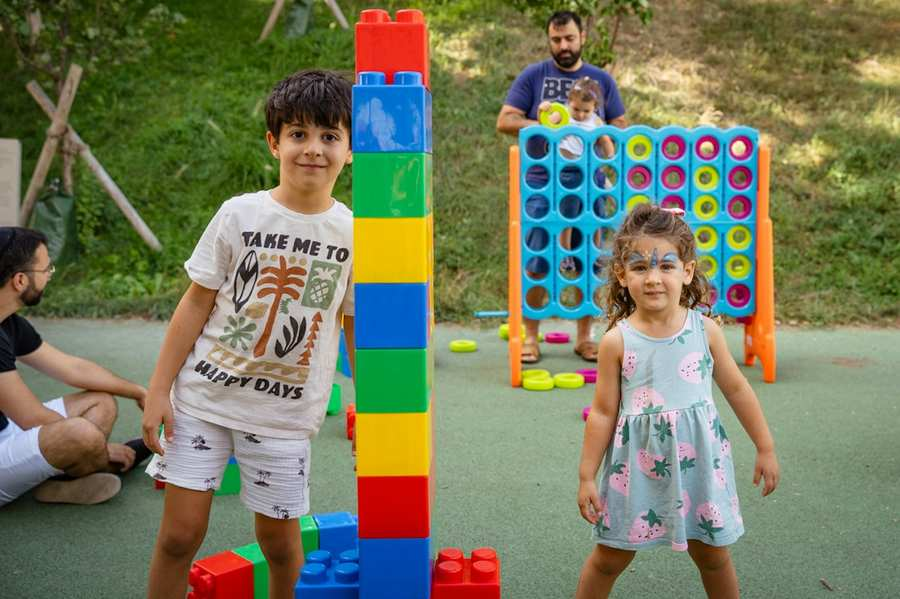
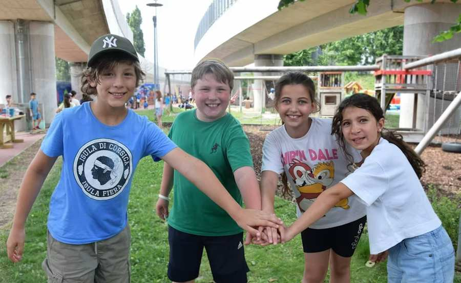
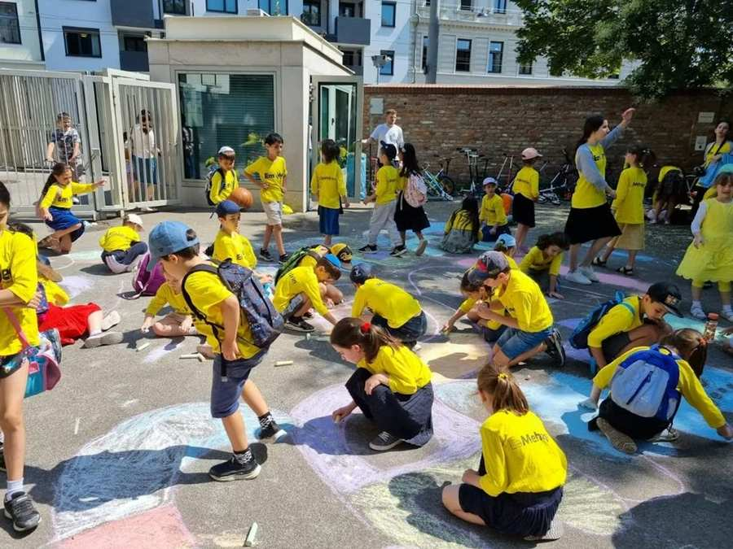
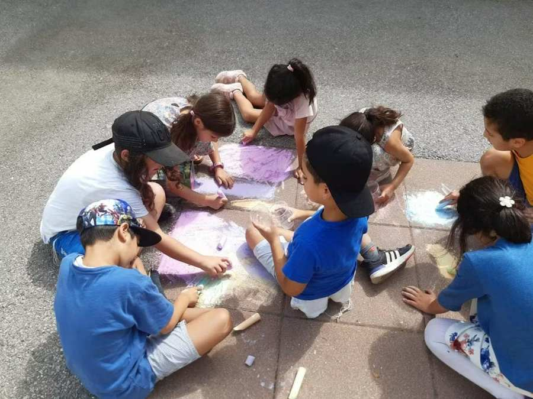
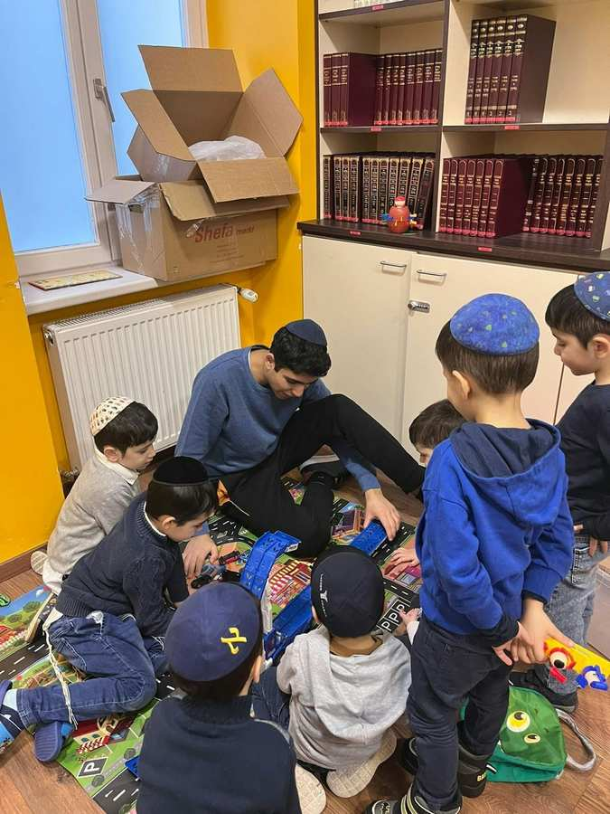
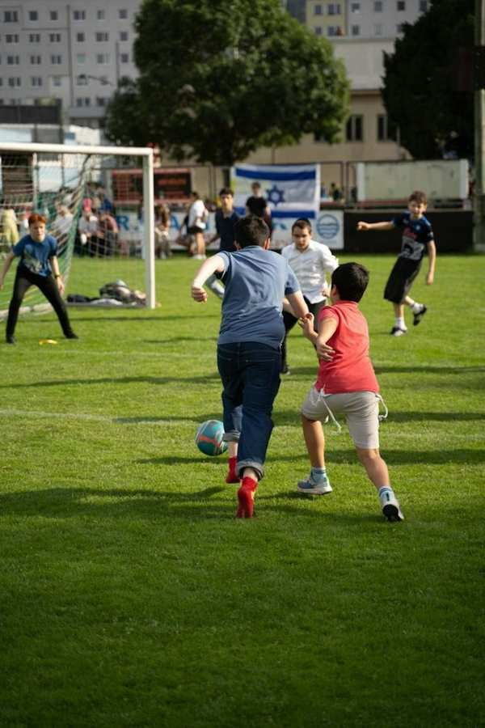
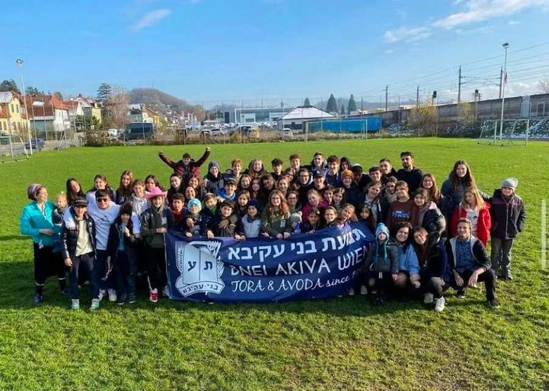
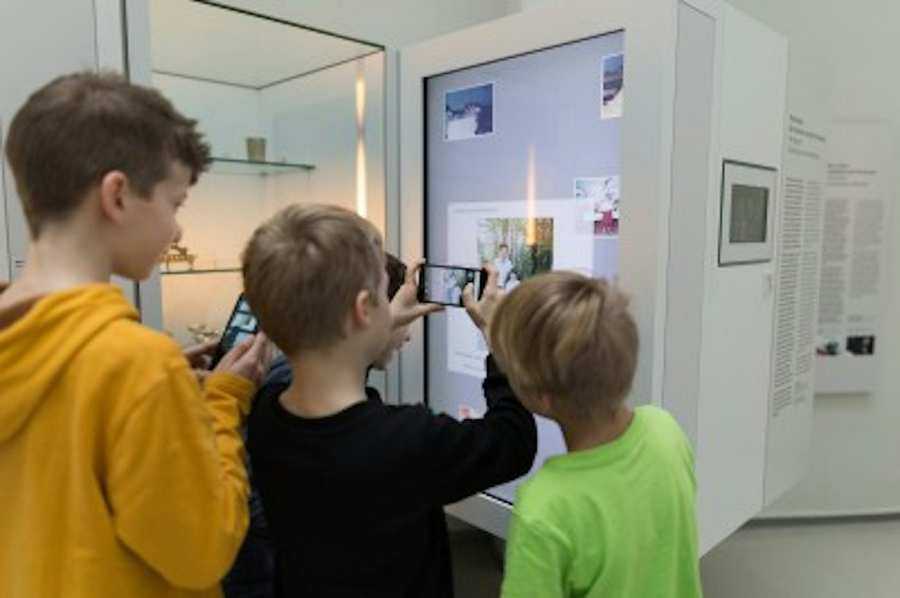
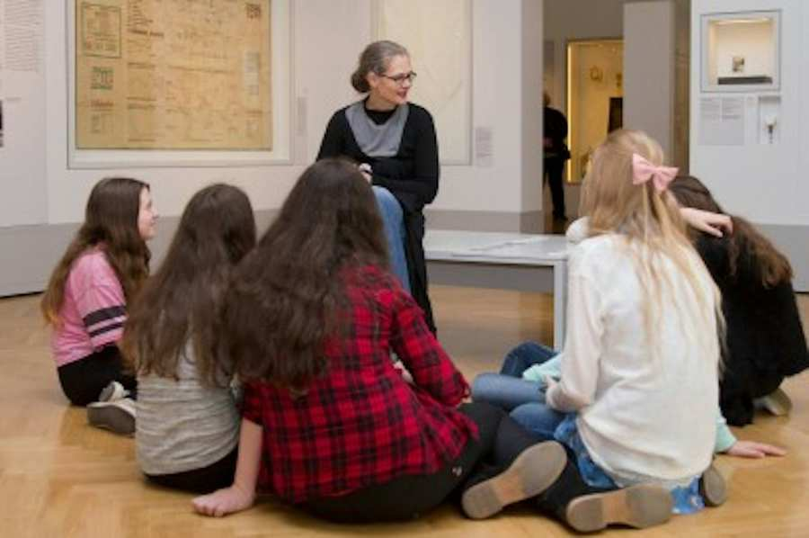

Sommerbroschüre 2026
Liebe Kinder, Jugendliche und Eltern,
ein weiteres Schuljahr ist vorbei und die wohlverdienten Sommerferien stehen vor der Tür!
Gemeinsam mit den jüdischen Jugend- und Sportvereinen, zahlreichen Einrichtungen der IKG Wien sowie externen Partnern hat die JUKO auch dieses Jahr wieder eine abwechslungsreiche Sommerbroschüre für euch zusammengestellt.
Freut euch auf ein vielfältiges Programm mit spannenden Ausflügen in die Natur, sportlichen Aktivitäten, Musikkursen und vielen weiteren Angeboten. Egal ob Abenteuer, Bewegung, Kreativität oder gemeinsame Erlebnisse – es ist für alle etwas dabei!
Wir wünschen euch viel Freude beim Durchstöbern der Broschüre, einen wunderschönen Sommer und erholsame Ferien.
Euer JUKO-Team
Übersicht
- ZPC Sommercamp
- Chabad Day Camp
- Jehuda Halevi Sommercamp
- Camp David
- Bucharische Gemeindesynagoge
- Hashomer Hatzair Sommermachane
- Bnei Akiva Sommermachane
- Sommer im Jüdischen Museum Wien/ Sachen Machen – Dinge fürs Ausruhen
- Sommer im Jüdischen Museum Wien / Wie es uns gefällt!
1. ZPC Sommercamp
Alter: 6 - 10 Jahre
Zeitraum: 06.07.2026 - 31.07.2026
Uhrzeit: Montag - Donnerstag 08:00 - 17:00 Uhr, Freitag 08:00 - 15:20 Uhr
Ort: ZPC Schule / Simon-Wiesenthal-Gasse 3, 1020 Wien
Kosten: 110€ pro Woche
Beschreibung:
Es finden am Montag, Dienstag, Mittwoch, Donnerstag und am Freitag angeleitete Workshops (Vormittag und Nachmittag) in Gruppen statt. In der Früh wird den Kindern das genauere Programm des Tages bekannt gegeben. Hierzu können die Kinder sich zu einem der Workshops einschreiben (das Prozedere ist das gleiche wie im Hortalltag).
Voraussetzung: Schüler/in der ZPC-Volksschule
Mehr Infos und Anmeldung:
Tel.: 01 2164046240
Email: n.schiffrer@zpc.at

2. Chabad Day Camp
Alter: 6 - 10 Jahre
Zeitraum: 06.07.2026 - 24.07.2026
Uhrzeit: Montag - Donnerstag 08:00 - 15:45 Uhr, Freitag 08:00 - 12:30 Uhr
Ort: Lauder Chabad Schule / Rabbiner-Schneerson-Platz 1, 1020 Wien
Kosten: 380 € pro Kind für alle Wochen
Beschreibung:
Ein tägliches Sommererlebnis für Kinder im Volksschulalter (1.–4. Klasse) – das Camp ist voller spannender Aktivitäten, Ausflüge und betreut von einem engagierten und verantwortungsvollen Team, ganz im Sinne der bewährten Chabad Day Camp-Tradition.
Mehr Infos und Anmeldung:
Tel.: +43 665 67174830
Email: cdcwien@gmail.com

3. Jehuda Halevi Sommercamp
Alter: 6 - 10 Jahre
Zeitraum: 10.08.2026 - 28.08.2026
Uhrzeit: Montag - Donnerstag 08:30 - 16:00 Uhr, Freitag 08:30 - 14:00 Uhr
Ort: Sephardische Synagoge / Tempelgasse 7, 1020 Wien
Kosten: 180€ pro Woche
Beschreibung:
Die Jehuda Halevi Musikschule ist die einzige jüdische Musikschule in Österreich und hat mit ihren über 100 SchülerInnen an zahlreichen Wettbewerben teilgenommen und mehrmals auch den 1. Platz errungen. Das Day Camp der Jehuda Halevi Musikschule beinhaltet ein von professionellen Pädagogen geführtes Programm, mit koscherer Verpflegung und natürlich mit einem Schwerpunkt auf musikalische Aktivitäten.
Mehr Infos und Anmeldung:
Tel.: 069910434244
Email: Buero@jh-m.at

4. Camp David
Alter: 3 - 6 Jahre
Zeitraum: 10.08.2026 - 21.08.2026
Uhrzeit: Montag - Donnerstag 09:30 - 15:30 Uhr, Freitag 09:30 - 14:00 Uhr
Ort: Bet Halevi / Rabbiner-Schneerson-Platz 2, 1200 Wien
Kosten: 160€ für alle Wochen
Beschreibung:
Im Camp werden die Kinder nicht nur betreut sondern auch Entertain mit coolen und religiösen Programmen, Ausflügen und vieles mehr. Außerdem gibt es auch eine Koscher Verpflegung mit drei Mahlzeiten.
Mehr Infos und Anmeldung:
Tel.: 06765111503
Email: david.ustoniatzov@icloud.com

5. Bucharische Gemeindesynagoge
Alter: Jungs 11 - 15 Jahre
Zeitraum: 20.07.2026 - 31.07.2026
Uhrzeit: Montag - Donnerstag 08:00 - 16:00 Uhr, Freitag 08:00 - 13:00 Uhr
Ort:
Sephardische Synagoge / Tempelgasse 7, 1020 Wien
Kosten: 180€ pro Woche
Beschreibung:
- Interaktives Torah-Lernen
- Atemberaubende Ausflüge
- Frühstück & warmes Mittagessen
- wöchentliche Tombola mit großen Preisen
Mehr Infos und Anmeldung:
Tel.: 067762044822
Email: gemeindesynagoge@jachad.at

6. Hashomer Hatzair Sommermachane
Alter: 8 - 18 Jahre
Zeitraum: 05.07.2026 - 14.07.2026
Ort: Österreich
Kosten: auf Anfrage
Beschreibung:
Auf unserem diesjährigen Sommermachane erwarten euch viele spannende Peulot, coole Outdooraktivitäten und vieles mehr! Unsere Madrichim*ot freuen sich schon auf ein unvergessliches Machane gemeinsam mit euch!
Mehr Infos und Anmeldung:
Tel.: +436765645217
Email: Vienna@hashomerhatzair-eu.com
7. Bnei Akiva Sommermachane
Alter: 6 - 18 Jahre
Zeitraum: 05.07.2026 - 12.07.2026
Ort:
Salzburg, Österreich
Kosten: 500€ für die ganze Woche
Beschreibung:
Tage voller Spaß, Freunde, Lernen und Erlebnisse
Mehr Infos und Anmeldung:
Tel.: +4368120588687
Email: Shaliach@bneiakiva.at

8. Sommer im Jüdischen Museum Wien / Sachen Machen – Dinge fürs Ausruhen
Alter: 6 - 10 Jahre
Zeitraum: 06.07.2026 und 07.07.2026 von 09:00 bis 13:00 Uhr
Alter: 10 - 12 Jahre
Zeitraum: 08.07.2026 und 09.07.2026 von 09:00 bis 13:00 Uhr
Ort: Jüdisches Museum Wien
Kosten: auf der Website
Beschreibung:
Schon im allerersten jüdischen Museum der Welt
wusste man, das Rasten und Ruhegeben wirklich wichtig ist. Dort gab es einen
eigenen Raum, der „Gute Stube“ genannt wurde und den jüdischen Ruhetag Schabbat
zum Thema hatte. Diesen Raum richten junge Designer:innen mit tollen
Materialien und noch tolleren Ideen ganz neu ein. Inspiration liefert das
Museum und die Fantasie. Achtung fertig, Ausruhen, los!
Mitzubringen: Bequeme Kleidung, die schmutzig werden kann und Jause
Mehr Infos und Anmeldung:
https://www.kinderunikunst.at/de/kinderunikunst-module/kinderunikunst-kreativwoche

9. Sommer im Jüdischen Museum Wien / Wie es
uns gefällt!
Alter: 6 - 14 Jahre
Zeitraum: 13., 14., 15., 16., 17., 28., 29., 30. Juli und 2. August 2026 von 09:30 bis 12:00 Uhr
Ort: Jüdisches Museum Wien
Kosten:
pro Kind/Schüler:in:
€ 3,-
Erwachsene: € 15,- / mit Ferienspielpass: € 6,-
Beschreibung:
Im Jüdischen Museum Wien hat alles seinen Platz auf den vier Stockwerken, aber – vielleicht geht das auch anders? Kleiner, größer, lauter, bequemer, lustiger, spannender? Bei einem Rundgang durch das ganze Haus erlebst du das Museum, wie es ist. Danach gestaltest du aus Kartons, Stoffen, Folien, Knete, Kreide, Filz und Papier das Museum nach deinen Vorstellungen.
In Kooperation mit wienXtra.
Mehr Infos und Anmeldung:
Tel.: +43 1 535 04 31-1538 (Mo - Fr 10:00 – 15:30 Uhr)
Email: tours@jmw.at

Schönen Sommer und bleibt gesund!